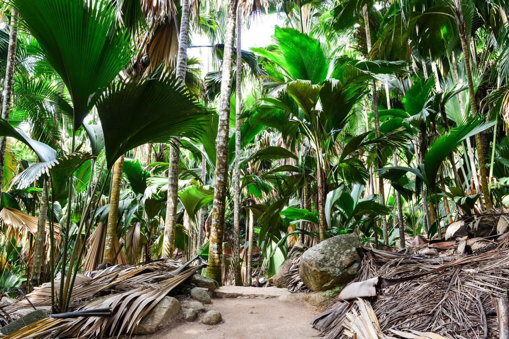
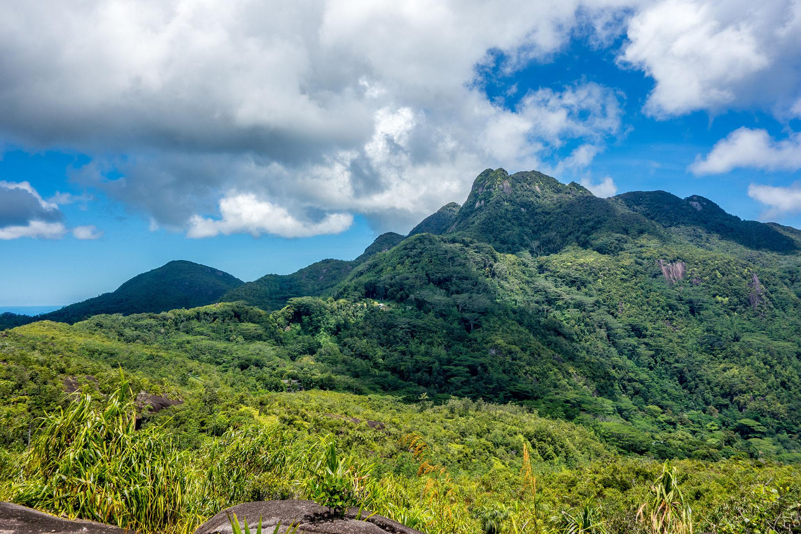

Anse Source d'Argent
Located on La Digue Island, Anse Source d'Argent is one of the most famous beaches in Seychelles. It is known for its beautiful white sand, crystal-clear turquoise waters and enormous granite boulders. Visitors can enjoy swimming, relaxing and taking photographs of this spectacular landscape.

Vallée de Mai
Located on Praslin Island, Vallée de Mai is a beautiful nature reserve famous for its ancient palm forest and the unique Coco de Mer palm. Visitors can explore its peaceful walking trails while discovering rare plants and wildlife. It is also recognised as a UNESCO World Heritage Site.

Morne Seychellois National Park
Located on Mahé Island, Morne Seychellois National Park is the largest national park in Seychelles. It features beautiful tropical forests, impressive mountain landscapes and scenic hiking trails. It is an excellent destination for visitors who enjoy nature, exploration and outdoor adventures.